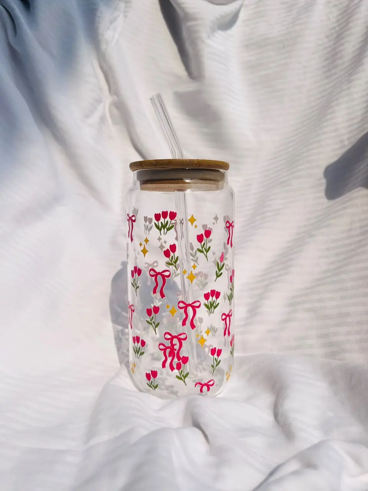
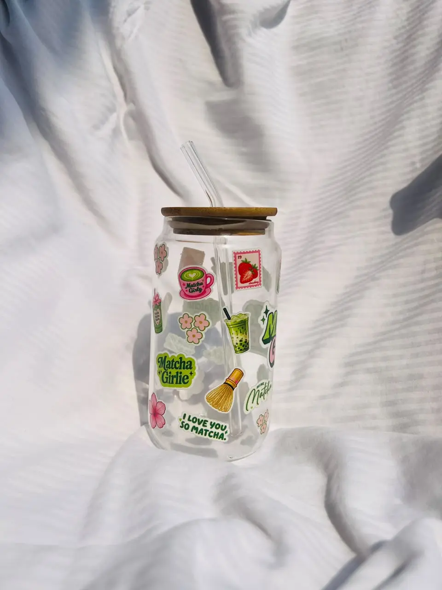
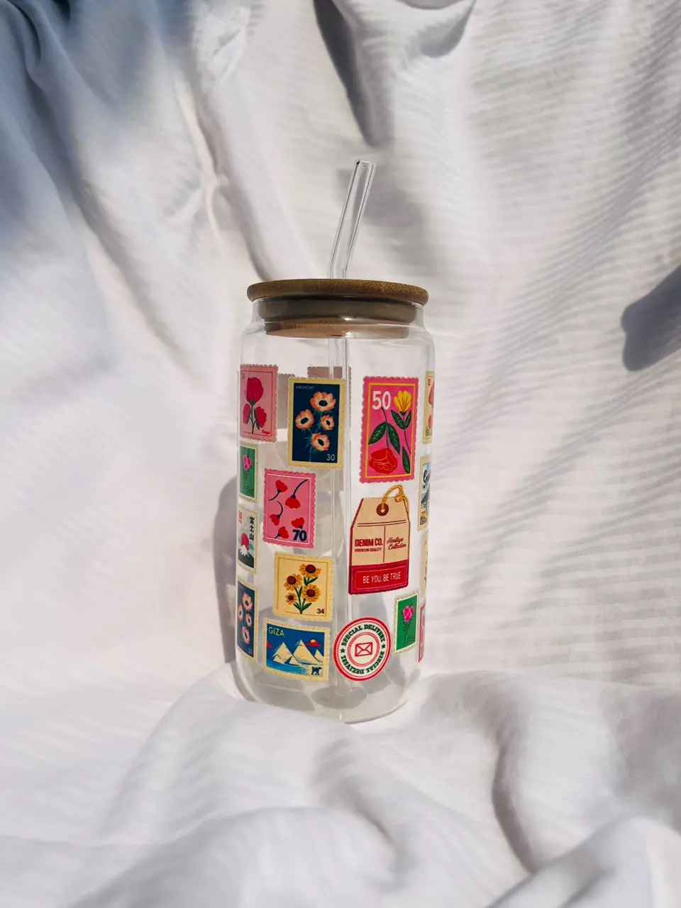
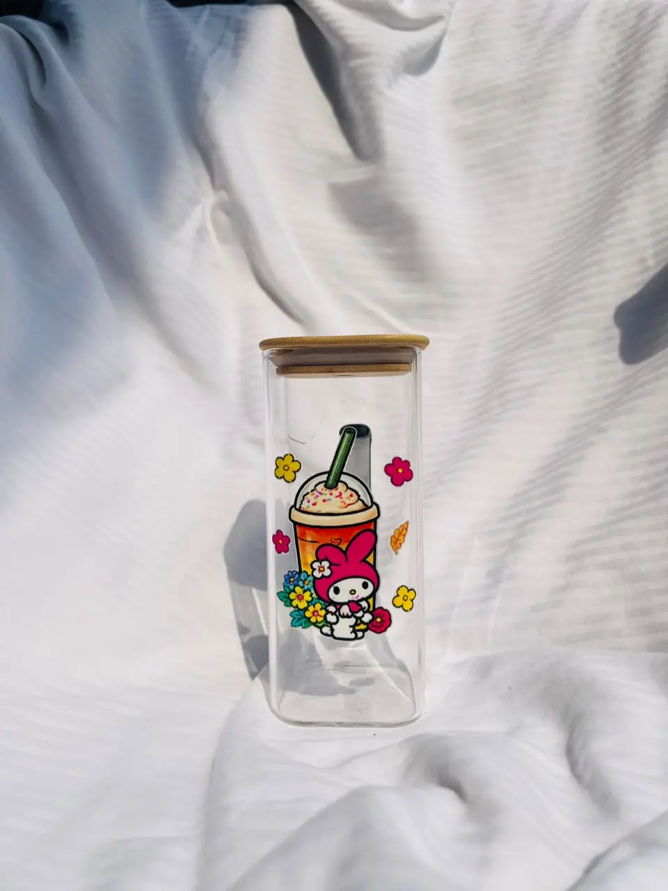
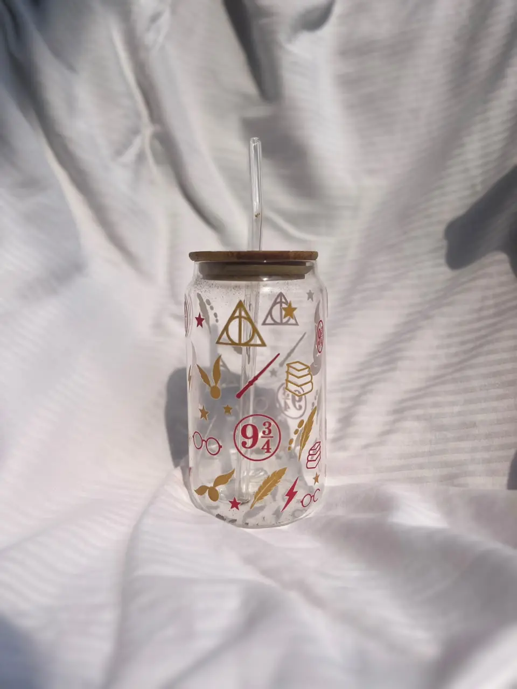

Define the item
Identify the glass, printable face, coating or treatment, shape, dimensions and intended handling.
PRODUCT APPLICATION / GLASS
Project review for UV direct print, UV-DTF transfer, or an alternative route on a defined glass item. Suitability and production scope are confirmed from the specific job.

START WITH THE APPLICATION
Glass type, coating or treatment, printable face, geometry, intended use and cleaning conditions can change the route. HDC reviews those details and defines any sample or validation step before confirming production scope.
Performance boundaryFood contact, dishwasher or microwave use, outdoor life and structural glazing suitability require application-specific evidence; they are not assumed here.

VISUAL APPLICATION REFERENCES
These images support a project conversation. They do not verify adhesion, durability, safety or production performance on a customer’s glass.



PRINTING IN MOTION
This eight-second clip, supplied by HDC, shows a printer laying decorative artwork onto a flat sheet. It illustrates a production moment only; the material and application in this clip do not establish suitability or performance for every glass object.
Identify the glass, printable face, coating or treatment, shape, dimensions and intended handling.
Assess artwork and geometry; determine whether a controlled sample and agreed tests are needed.
Set the production method and acceptance criteria from the sample evidence and project requirements.
ROUTES TO ASSESS
A method remains a candidate until the actual glass, coating, print side, geometry and intended use have been reviewed.
UV direct printing · review the exact part and setup.
UV-DTF transfer · evaluate on the defined surface.
Use sample results and agreed requirements to confirm the route.
No universal approval is inferred from the word “glass” or from a reference image.
PROJECT BRIEF
These fields describe the item for review. They do not qualify the glass or calculate a price. You can revise every detail on the enquiry form.
Please do not enter confidential or personal information in these fields.
PROJECT ENQUIRY
A physical sample or exact part details may be needed before HDC can confirm a route. The enquiry form lets you share the application, quantity, dimensions, surface and artwork status.
Request a project review